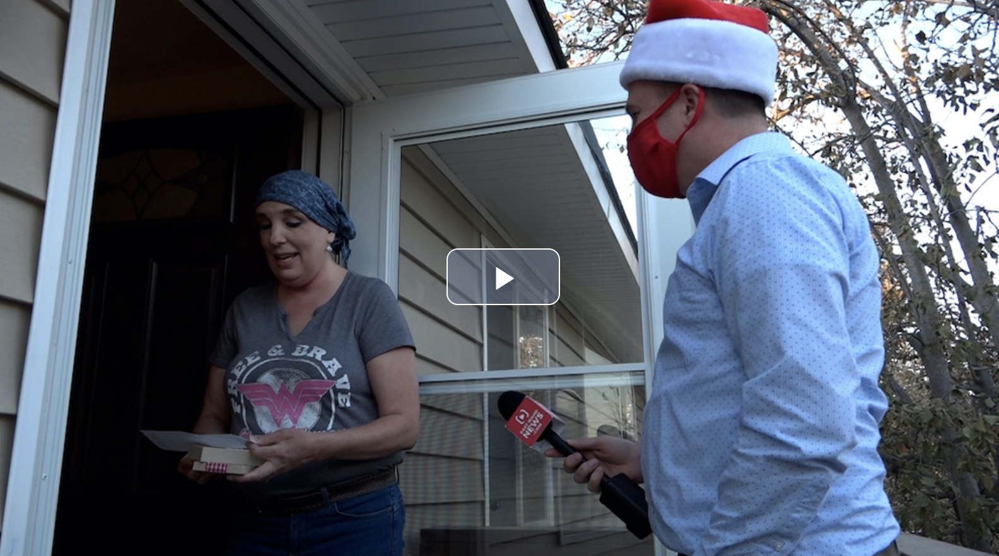

Secret Santa Strikes Again
Secret Santa is back and this Christmas is bigger than ever! The EastIdahoNews.com team is busy helping a local man gift more than $500,000 this holiday season. A lot more. Secret Santa is a real person who wants to remain anonymous and hopes to help as many people as he can. We will be surprising deserving people and families every day from now until Christmas with gifts unique to their circumstances. LoRita Kahn is a 54-year-old grandmother battling breast cancer. Her husband was a school custodian until a few years ago when he was forced to retire because of dementia. Secret Santa actually surprised him in front of the entire school in 2017! LoRita says, “I have my battle of armor on so let the battle begin!!” She works as a manager at Gandolfo’s Deli in Idaho Falls and is keeping her head up trying to manage it all. Secret Santa asked us to go visit LoRita with an early Christmas gift.